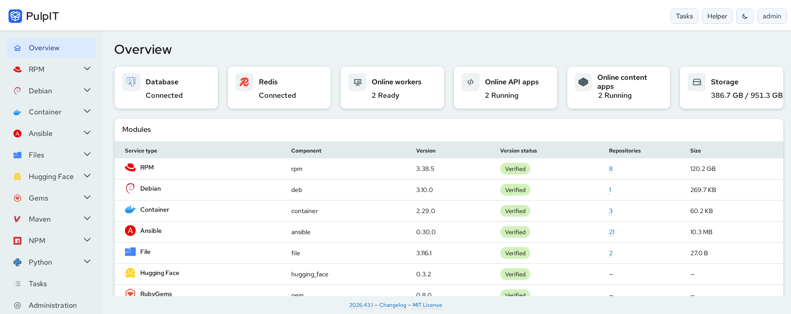
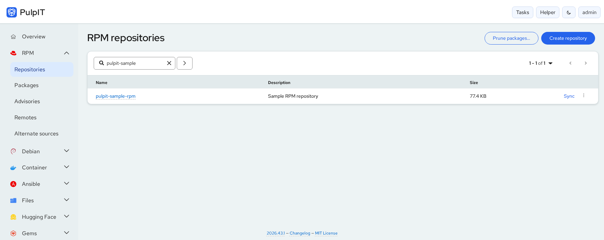
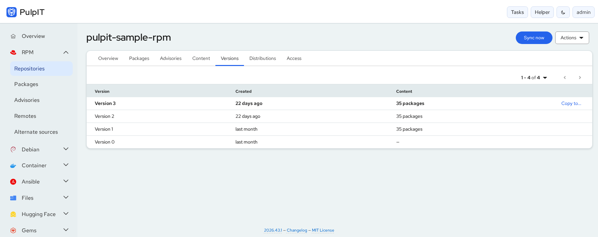
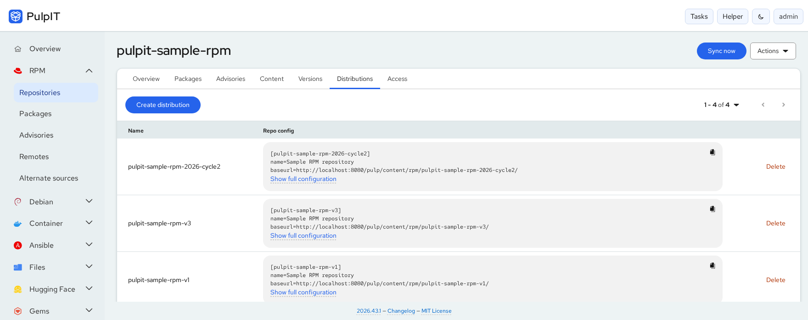
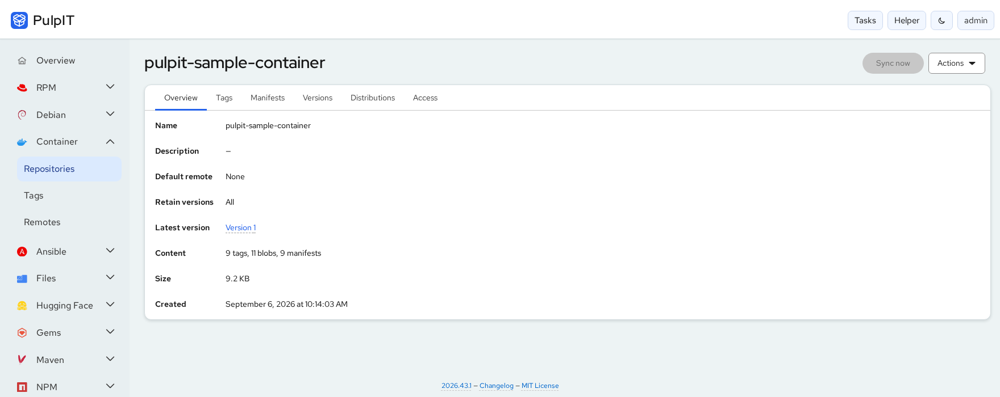
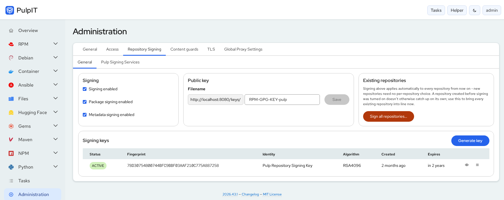
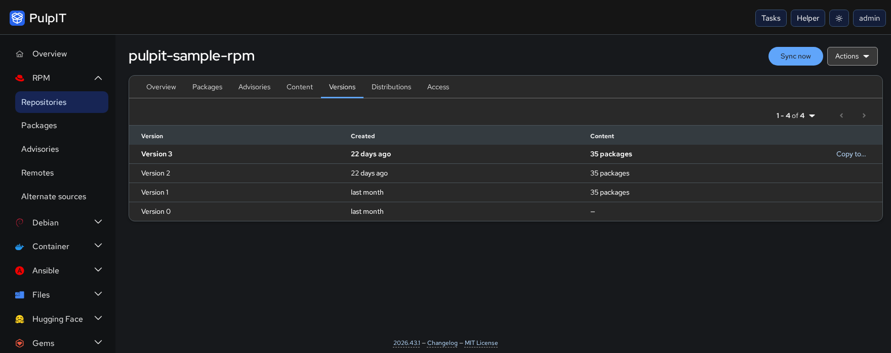

Repositories and versions
Create, edit, sync and delete repositories. Browse content, walk the version history, copy a version's content to another repository and upload packages, advisories or collections.
Open source · MIT licensed
Pulpit is a web interface for Pulp. Manage repositories, sync remotes, publish distributions, follow tasks and administer users, signing keys and TLS — across ten content types, from one place. Pulp stays the engine and the single source of truth; Pulpit is where you operate it from.

Pulpit talks to the live Pulp API. Whatever you do in the interface is a real Pulp operation, tracked as a task, with the same permissions Pulp itself enforces.
Create, edit, sync and delete repositories. Browse content, walk the version history, copy a version's content to another repository and upload packages, advisories or collections.
Configure remotes (including proxy and TLS settings and ULN for RPM),
publish distributions and copy ready-made dnf,
podman or docker configuration.
Every long-running action is tracked in a task drawer and a searchable task history, with failures explained in plain language and a retry where it makes sense.
Manage users, groups and roles, grant roles on a single repository, and connect an LDAP directory — all from Administration.
Generate and rotate GPG signing keys, publish the public key, sign packages and metadata, and re-sign existing repositories. Key custody lives in a small dedicated backend, not in the browser.
Terminate TLS with an automatic self-signed certificate or your own, set one global outbound proxy policy, and manage content guards and Pulp signing services.
Built on the open PatternFly design system, with light and dark themes. Click an image to enlarge it.






Screenshots show a development build of Pulpit against a local Pulp with sample repositories.
The interface is a single-page application with no database or login system of
its own: Pulp is the only source of truth and the only identity provider. A
small companion backend, pulpit-core, handles the few things a
browser or Pulp's API cannot — signing key custody first. Everything ships as
one container image, served together with Pulp from one origin behind nginx.
Browser → Pulpit SPA (React + TypeScript + PatternFly) → Pulp REST API → PostgreSQL (owned by Pulp)
→ pulpit-core API → pulpit-worker → GPG
The bundled Docker Compose stack runs Pulp and Pulpit together and is the most tested way to try it. Podman (Quadlet) and plain Kubernetes manifests are provided too.
git clone https://github.com/simon-verbois/pulpit.git
cd pulpit
./deployment/docker/generate-env.sh # writes .env with fresh secrets, prints the admin password once
docker compose -f deployment/docker/compose.yml --env-file .env up -d --build
Open http://localhost:8080/ and sign in as admin with
the printed password. See the
deployment guide
for Podman, Kubernetes, sizing and memory limits.
Early-stage project. The bundled stack is a reference topology, not a hardened production deployment. Before exposing Pulpit beyond a trusted network, read the security notes and the roadmap for what is built and what is still open.